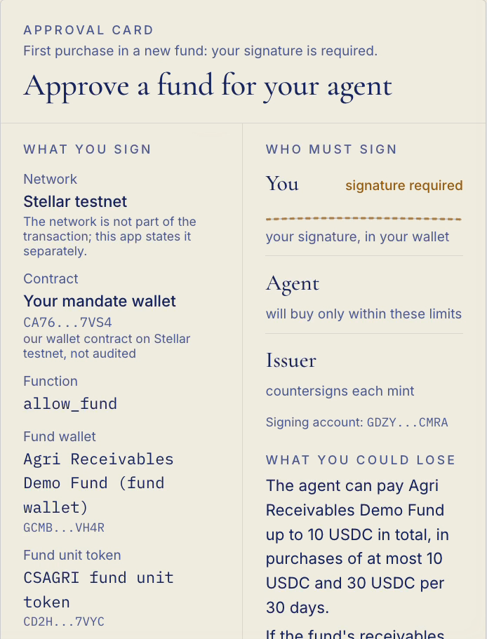
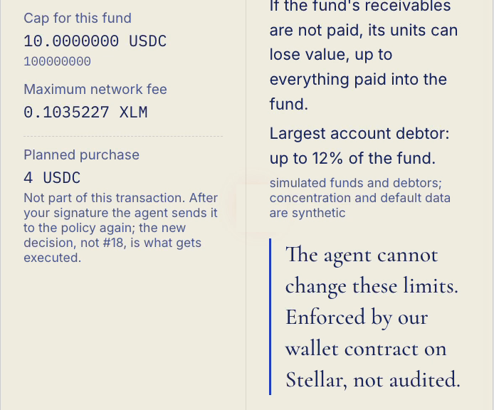

<!doctype html>
<html lang="en">
<head>
<meta charset="utf-8" />
<title>Countersign · Presentation deck</title>
<link rel="stylesheet" href="ink.css" />
<style>
  @page { size: 1920px 1080px; margin: 0; }
  .deck .slide { padding: 120px 230px 120px; display: flex; flex-direction: column; justify-content: center; }
  /* Titles sit centred at the top of every content slide */
  .deck .slide > p.eyebrow:first-child { text-align: center; }
  .deck .slide > p.eyebrow:first-child + h2 { text-align: center; margin-left: auto; margin-right: auto; }
  .deck .slide .folio { position: absolute; left: 0; right: 0; bottom: 44px; text-align: center; font-family: var(--mono); font-size: 16px; color: var(--ink-soft); }
  .deck .slide > .chrome { display: none; }
  .figslide { padding: 70px 190px 110px; display: flex; align-items: center; justify-content: center; }
  .figslide > svg { width: 100%; height: 100%; display: block; }
  .split { display: grid; grid-template-columns: 1fr 1fr; gap: 80px; align-items: center; height: 100%; }
  .stack > * + * { margin-top: 28px; }
  .tierrow { display: grid; grid-template-columns: 220px 1fr; gap: 24px; align-items: center; padding: 22px 28px; }
  .tierrow + .tierrow { margin-top: 14px; }
  .tierrow .name { font-family: var(--display); font-size: 44px; font-weight: 600; }
  .incident { padding: 36px 40px; }
  .incident .big { font-family: var(--display); font-size: 84px; line-height: 1; margin: 18px 0 10px; }
  .shot { border: 2px solid rgba(27,43,107,.22); border-radius: 8px; box-shadow: 8px 8px 0 rgba(27,43,107,.08); background: var(--cream); display: block; }
  .cardmock { background: var(--cream); border: 2px solid rgba(27,43,107,.18); border-radius: 8px; box-shadow: 0 2px 4px rgba(27,43,107,.03), 0 18px 48px rgba(27,43,107,.08); }
  .cardmock .hd { padding: 26px 34px 20px; border-bottom: 1px solid var(--hair); }
  .cardmock .bd { display: grid; grid-template-columns: 1fr 1fr; }
  .cardmock .col { padding: 22px 34px; }
  .cardmock .col + .col { border-left: 1px solid var(--hair); }
  .cardmock dt { font-size: 14px; letter-spacing: .16em; text-transform: uppercase; color: var(--ink-soft); margin-top: 14px; }
  .cardmock dd { margin: 4px 0 0; font-size: 22px; }
  .cardmock .ft { padding: 14px 34px; border-top: 1px solid var(--hair); background: rgba(235,229,214,.7); font-size: 15px; color: var(--ink-soft); }
  .anno { position: absolute; font-family: var(--display); font-style: italic; font-size: 28px; color: var(--cobalt); }
  .member { display: flex; gap: 36px; align-items: center; padding: 34px 40px; }
  .member .photo { width: 210px; height: 210px; flex: none; border: 3px solid var(--cobalt); }
  .linkrow { display: grid; grid-template-columns: 220px 1fr; padding: 14px 0; border-bottom: 1px solid var(--hair); font-size: 24px; }
  .linkrow span:first-child { color: var(--ink-soft); font-size: 16px; letter-spacing: .16em; text-transform: uppercase; padding-top: 6px; }
  .bullet { display: grid; grid-template-columns: 56px 1fr; gap: 14px; align-items: start; }
  .bullet + .bullet { margin-top: 26px; }
  .dagnode { display: inline-flex; flex-direction: column; padding: 12px 18px; border-radius: 6px; border: 2px solid var(--cobalt); min-width: 150px; background: rgba(235,229,214,.7); }
  .dagnode b { font-family: var(--display); font-size: 26px; font-weight: 600; }
  .dagnode small { font-size: 13px; letter-spacing: .12em; text-transform: uppercase; }
</style>
<script src="ink.js"></script>
<script src="figs.js"></script>
</head>
<body class="deck">
<svg width="0" height="0" style="position:absolute">
  <filter id="duotone" color-interpolation-filters="sRGB">
    <feColorMatrix type="matrix" values=".33 .33 .33 0 0 .33 .33 .33 0 0 .33 .33 .33 0 0 0 0 0 1 0"/>
    <feComponentTransfer>
      <feFuncR type="table" tableValues="0.106 0.957"/>
      <feFuncG type="table" tableValues="0.169 0.941"/>
      <feFuncB type="table" tableValues="0.420 0.898"/>
    </feComponentTransfer>
  </filter>
</svg>
<div id="deck"></div>
<script>
const tiny = (inner, w, h) => `<svg xmlns="http://www.w3.org/2000/svg" viewBox="0 0 ${w} ${h}" width="${w}" height="${h}" style="overflow:visible">${ink.defs()}${inner}</svg>`;
const ic = (name, size = 52, color = C.cobalt) => tiny(icon(name, 0, 0, size, color, 1.7), size, size);
const nibSvg = (size, baseline = true) => tiny(nib(0, 0, size, C.cobalt, baseline), size, size);
const underline = (w) => tiny(brush(0, 0, w), w, w * 0.16);
const chromeBar = (n) => `<div class="folio">${n}</div>`;
/** A figure slide with a real screenshot from the app laid over a free corner of it */
const figShot = (name, eyebrow, src, caption, w) => `<div class="slide figslide" aria-label="${eyebrow}" style="padding:70px 90px 110px;display:grid;grid-template-columns:1fr ${w}px;gap:36px;align-items:center"><div style="height:100%">${centreTitle(FIGS[name]())}</div><div><p class="eyebrow">In the app</p><p class="source" style="margin-top:12px;font-size:17px">${caption}</p></div>CHROME</div>`;
const fig = (name, eyebrow) => `<div class="slide figslide" aria-label="${eyebrow}">${centreTitle(FIGS[name]())}CHROME</div>`;
/** The figure's eyebrow and title move to the centre for the deck (the PNGs keep them left for the documents) */
function centreTitle(svgText) {
  const box = document.createElement('div');
  box.innerHTML = svgText;
  const el = box.querySelector('svg');
  const w = Number(el.getAttribute('viewBox').split(' ')[2]);
  [...el.querySelectorAll('text')].slice(0, 2).forEach((t) => {
    t.setAttribute('text-anchor', 'middle'); t.setAttribute('x', String(w / 2));
    t.querySelectorAll('tspan').forEach((ts) => ts.setAttribute('x', String(w / 2)));
  });
  el.removeAttribute('width'); el.removeAttribute('height');
  el.setAttribute('style', 'width:100%;height:100%');
  return el.outerHTML;
}

const S = [];

// 1 Cover
S.push(`<div class="slide" style="padding:0">
  <div style="position:absolute;right:120px;top:150px">${nibSvg(640)}</div>
  <div style="position:absolute;left:140px;top:170px;width:1050px" class="stack">
    <p class="eyebrow">2026 Shenzhen FinTechathon · International AI Track · Topic F, Agent Wallet</p>
    <h1 style="font-size:168px">Countersign</h1>
    <div>${underline(380)}</div>
    <h2 style="font-size:64px">Sign only what you can read.</h2>
    <p class="soft" style="max-width:960px">An investing agent that cannot buy a fund unit unless the investor's mandate, the fund's issuer and a wallet contract the agent cannot change agree.</p>
  </div>
  <div style="position:absolute;left:140px;bottom:90px;display:flex;gap:40px;align-items:center">
    <div class="photo" style="width:84px;height:84px"></div>
    <div><b style="font-size:24px">Pablo de Azevedo</b><br><span class="soft small">Team leader · Front end and product</span></div>
    <div class="photo" style="width:84px;height:84px;margin-left:30px"></div>
    <div><b style="font-size:24px">Cecília Galvão</b><br><span class="soft small">Blockchain and backend</span></div>
    <div class="soft small" style="margin-left:40px;max-width:560px">Computer Engineering, Inteli, Institute of Technology and Leadership, São Paulo. Pablo on exchange at CESI École d'Ingénieurs, Toulouse.</div>
  </div>
</div>`);

// 2 The question
S.push(`<div class="slide">
  <p class="eyebrow">The question</p>
  <h2 style="margin-top:18px">What should an AI agent be allowed to sign for you?</h2>
  <div style="margin-top:56px;display:grid;grid-template-columns:1.15fr .85fr;gap:70px;align-items:center">
    <div>
      <div class="card tierrow"><span class="name cobalt">Green</span><span style="font-size:26px">Automatic: balance and information queries</span></div>
      <div class="card tierrow"><span class="name ochre">Yellow</span><span style="font-size:26px">User confirmation: small transfers</span></div>
      <div class="card tierrow" style="border:3px solid var(--vermilion)"><span class="name vermilion">Red</span><span style="font-size:26px">Strong verification: <b>investment subscription</b></span></div>
      <p class="source" style="margin-top:18px">Source: 2026 FinTechathon, Domestic AI Track brief, risk tiers of the banking agent (Green, Yellow, Red).</p>
    </div>
    <div class="stack">
      <p style="font-family:var(--display);font-size:48px;line-height:1.2">The hardest thing for an agent is not talking about an investment.</p>
      <p style="font-family:var(--display);font-size:48px;line-height:1.2" class="cobalt">It is buying one.</p>
    </div>
  </div>
  CHROME</div>`);

// 3 The scenario, 4 Market, 5 Persona
S.push(fig('fig-receivables', 'The scenario'));
S.push(fig('fig-market', 'Why now'));
S.push(fig('fig-persona', 'A day without Countersign'));

// 5 Incidents
S.push(`<div class="slide">
  <p class="eyebrow">What has already gone wrong</p>
  <h2 style="margin-top:18px">A refusal written in a prompt does not hold money</h2>
  <div style="margin-top:60px;display:grid;grid-template-columns:repeat(3,1fr);gap:36px">
    <div class="card incident">${ic('chat', 60)}<div class="big">13.19 ETH</div><h3>Freysa</h3><p class="small soft" style="margin-top:12px">Talked into a transfer by a chat instruction, after 482 messages (about US$47 thousand).</p><p class="source" style="margin-top:22px">Source: Simon Willison, 29 Nov 2024</p></div>
    <div class="card incident">${ic('server', 60)}<div class="big">55.5 ETH</div><h3>AIXBT</h3><p class="small soft" style="margin-top:12px">Drained through the operator's panel (about US$106,200).</p><p class="source" style="margin-top:22px">Source: AI Incident Database, 1003</p></div>
    <div class="card incident" style="border:3px solid var(--vermilion)">${ic('eye', 60, C.vermilion)}<div class="big">~US$1.5bn</div><h3>Bybit</h3><p class="small soft" style="margin-top:12px">People approved a signing interface that showed one thing while the transaction did another.</p><p class="source" style="margin-top:22px">Source: Bloomberg, 21 Feb 2025</p></div>
  </div>
  <p style="margin-top:56px;max-width:1500px;font-family:var(--display);font-size:38px;line-height:1.3">In most agent wallets the model proposes and a policy on the server decides. If the server falls, the policy falls with it. <span class="cobalt">And a human only approves what the screen shows.</span></p>
  CHROME</div>`);

// 6 Bridge
S.push(`<div class="slide" style="display:grid;grid-template-columns:1.2fr .8fr;gap:60px;align-items:center">
  <div class="stack">
    <p class="eyebrow">So we built</p>
    <h2 style="font-size:68px;line-height:1.08">An investing agent that cannot buy a fund unit unless the investor's mandate, the fund's issuer and a wallet contract the agent cannot change agree.</h2>
    <div>${underline(460)}</div>
    <p class="small soft">Of the frictions in this market, we take on two: a confirmation she cannot read, and an agent she cannot bound. Onboarding and paperwork stay simulated here. Her limits live in our wallet contract on Stellar, not audited, which the agent cannot change; the issuer signs every mint; every payment, decision hash and mint is a public record on the Stellar test network that anyone can open.</p>
  </div>
  <div style="position:relative;height:720px">
    <div style="position:absolute;left:40px;top:40px">${nibSvg(560)}</div>
    <div class="anno" style="left:-70px;top:250px">her mandate</div>
    <div class="anno" style="left:470px;top:250px">the issuer</div>
    <div class="anno" style="left:230px;top:610px">a wallet contract</div>
  </div>
  CHROME</div>`);

// 7 Actors
S.push(fig('fig-actors', 'Three parties'));

// 8 The card
S.push(`<div class="slide" style="padding:80px 200px 100px">
  <p class="eyebrow">Before every first purchase in a new fund</p>
  <h2 style="margin-top:18px">She reads before she signs</h2>
  <div style="margin-top:44px;display:grid;grid-template-columns:1.25fr .75fr;gap:60px;align-items:center">
    <div style="position:relative;height:690px">
      
      
    </div>
    <div class="stack">
      <div class="bullet">${ic('eye', 46)}<p class="small"><b>Decoded from the exact bytes</b> she will sign, not written by the model. The network is stated separately: it is not part of the transaction.</p></div>
      <div class="bullet">${ic('alert', 46, C.vermilion)}<p class="small">The browser decodes the bytes a second time and shows <b class="vermilion">Do not sign</b> if its reading differs from our API. That guards against our API, not against a compromised front end: the independent check is her wallet's own display of the transaction.</p></div>
      <div class="bullet">${ic('pen', 46)}<p class="small">Her wallet opens only after she presses <b>Sign in your wallet</b> on the card.</p></div>
      <p class="source">Screenshots from the app (demo video, 0:05 and 2:03); test assets on the Stellar test network.</p>
    </div>
  </div>
  CHROME</div>`);

// 9 Sequence
S.push(fig('fig-sequence', 'A first purchase'));

// 10 Agent design
const dag = ['Profile', 'Perimeter', 'Eligibility', 'Screening', 'Proposal', 'Investor signature', 'Agent purchase', 'Issuer countersign', 'Confirmed'];
const dagTier = ['Green', 'Green', 'Green', 'Green', 'Green', 'Red', 'Yellow', 'Issuer', ''];
const dagCol = { Green: 'cobalt', Red: 'vermilion', Yellow: 'ochre', Issuer: '', '': 'soft' };
/** The plan as two centred rows: the first five steps, then a hand drawn arrow down to the last four */
function planGraph() {
  const W = 1460, H = 330, bw = 236, bh = 92, gap = 48;
  const col = { Green: C.cobalt, Red: C.vermilion, Yellow: C.ochre, Issuer: C.navy, '': C.soft };
  const rows = [[0, 1, 2, 3, 4], [5, 6, 7, 8]];
  const pos = {};
  let b = '';
  rows.forEach((r, ri) => {
    const total = r.length * bw + (r.length - 1) * gap, x0 = (W - total) / 2, y = 10 + ri * 200;
    r.forEach((i, k) => {
      const x = x0 + k * (bw + gap); pos[i] = { x, y };
      const c = col[dagTier[i]];
      b += ink.box({ x, y, w: bw, h: bh, r: 10, seed: 900 + i, stroke: c, sw: 2.4 });
      b += ink.text(x + 20, y + 42, dag[i], { size: 25, font: 'display', weight: 600 });
      b += ink.text(x + 20, y + 72, dagTier[i] || 'done', { size: 14, color: c, weight: 600, spacing: 1.6, upper: true });
      if (k > 0) b += ink.arrow({ x1: x - gap + 6, y1: y + bh / 2, x2: x - 6, y2: y + bh / 2, sw: 2.4 });
    });
  });
  const a = pos[4], z = pos[5];
  b += `<g filter="url(#roughBig)" fill="none" stroke="${C.cobalt}" stroke-width="2.6" stroke-linecap="round" stroke-linejoin="round">
    <path d="M${a.x + bw / 2} ${a.y + bh + 6} C${a.x + bw / 2 + 40} ${a.y + bh + 70} ${z.x + bw / 2 + 280} ${z.y - 100} ${z.x + bw / 2} ${z.y - 8}"/>
    <path d="M${z.x + bw / 2 - 12} ${z.y - 22} L${z.x + bw / 2} ${z.y - 8} L${z.x + bw / 2 + 14} ${z.y - 20}"/></g>`;
  return `<svg viewBox="0 0 ${W} ${H}" style="width:100%;height:auto;overflow:visible">${ink.defs()}${b}</svg>`;
}
S.push(`<div class="slide">
  <p class="eyebrow">Agent design</p>
  <h2 style="margin-top:18px">The agent asks only what is missing, and shows its plan</h2>
  <div style="margin-top:40px;display:grid;grid-template-columns:1fr 1fr 1fr;gap:34px">
    <div class="card" style="padding:30px">${orb ? tiny(orb(26, 26, 24), 52, 52) : ''}<h3 style="margin-top:14px">Intent to a typed mandate</h3><p class="small soft" style="margin-top:10px">One sentence becomes residences, horizon, liquidity, maximum loss, amount, caps, sectors and recurrence. She approves its hash; it is anchored on chain.</p></div>
    <div class="card" style="padding:30px">${ic('graph', 52)}<h3 style="margin-top:14px">Ten strict tools</h3><p class="small soft mono" style="margin-top:10px;font-size:15px;line-height:1.7">get_mandate · propose_mandate · list_funds · get_fund · check_eligibility · quote_subscription · propose_subscription · execute_approved_purchase · get_status · get_holdings</p></div>
    <div class="card" style="padding:30px">${ic('refresh', 52)}<h3 style="margin-top:14px">Correct, stop, fall back</h3><p class="small soft" style="margin-top:10px">"Make it 4" replans without starting over. She can interrupt and resume. "What will I earn?" gets no figure. A failed tool is never assumed done. An orb on every investor screen opens the same conversation; it signs nothing.</p></div>
  </div>
  <p class="eyebrow" style="margin-top:46px">The plan, a visible graph; each node shows its tier</p>
  <div style="margin-top:22px">${planGraph()}</div>
  CHROME</div>`);

// 11 Architecture with "why Stellar"
S.push(`<div class="slide" style="padding:80px 150px 110px;display:grid;grid-template-columns:1.6fr .4fr;gap:44px;align-items:center">
  <div style="height:880px">${centreTitle(FIGS['fig-architecture']())}</div>
  <div class="stack">
    <p class="eyebrow">Why this infrastructure</p>
    <h3>USDC is the same asset as a trustline and as a contract</h3>
    <p class="small">So her existing USDC can sit in an agent wallet contract and be paid to a fund wallet in one contract call. Without it, the caps would move back to our server: exactly the design we reject.</p>
    <p class="small">Protocol 25 made BN254 and Poseidon native, so our badge verifier checks a Groth16 tier proof on chain. Every hash opens in a public explorer.</p>
    <p class="source">An advantage of cost and simplicity, not exclusivity: the same rules could be a smart account elsewhere.</p>
  </div>
  CHROME</div>`);

// 12 Layers, 13 Tiers, 14 Adversarial, 15 Benign, 16 Decision, 17 Evidence
S.push(fig('fig-layers', 'Who enforces what'));
S.push(fig('fig-tiers', 'Permission tiers'));
S.push(figShot('fig-adversarial', 'Adversarial suite', 'revoked-tight.png', 'Separate from the 12 tests: after one signature from her, the next recurring purchase was refused before anything was built or signed (demo video, 3:54).', 460));
S.push(fig('fig-benign', 'Benign suite'));
S.push(figShot('fig-decision', 'Decision hash on chain', 'decision-tight.png', 'The same link in the app: the payment\'s decision argument is log line #20 (demo video, 3:03).', 460));
S.push(`<div class="slide" style="padding:90px 180px 110px">
  <div style="height:560px">${centreTitle(FIGS['fig-evidence']())}</div>
  <div style="display:grid;grid-template-columns:1fr 1fr;gap:40px;margin-top:10px">
    <div class="card" style="padding:26px 30px"><p class="eyebrow">Open one yourself</p><p class="mono" style="font-size:19px;margin-top:10px">stellar.expert/explorer/testnet/tx/<br>ca28550282a909fc3d625dc3ef09825bd53a1be100d87f057b4b1d54a6b47bd1</p><p class="small soft" style="margin-top:8px">The agent's purchase through the app; its decision argument is line #5 of her log.</p></div>
    <div class="card" style="padding:26px 30px"><p class="eyebrow">Reproduce</p><p class="mono" style="font-size:21px;margin-top:10px">npm --prefix tests run suites<br>npm --prefix tests run evidence</p><p class="small soft" style="margin-top:8px">The export fails on any hash without a task or a log line, and on any divergent decision.</p></div>
  </div>
  CHROME</div>`);

// 18 Compliance
S.push(`<div class="slide">
  <p class="eyebrow">Security and compliance, 30% of the score</p>
  <h2 style="margin-top:18px">Compliance, before you ask</h2>
  <div style="margin-top:50px;display:grid;grid-template-columns:1fr 1fr;gap:46px 70px">
    <div class="bullet">${ic('globe', 50)}<div><h3>Perimeter</h3><p class="small soft" style="margin-top:8px">Not offered to, and not designed for, persons or entities in Mainland China. We name the February 2026 notice, Yinfa [2026] No. 42; the policy refuses that residence by rule.</p></div></div>
    <div class="bullet">${ic('scale', 50)}<div><h3>No licence, said plainly</h3><p class="small soft" style="margin-top:8px">Executing within a mandate is discretionary management, and holding the agent key is custody. Production needs a fund administrator, a custodian, a regulated on and off ramp and local authorisation.</p></div></div>
    <div class="bullet">${ic('person', 50)}<div><h3>Simulated checks</h3><p class="small soft" style="margin-top:8px">KYC/KYB, suitability and the perimeter are simulated, designed with reference to FINRA 2111, ESMA35-43-3172 and CSRC suitability measures.</p></div></div>
    <div class="bullet">${ic('lock', 50)}<div><h3>What the model sees</h3><p class="small soft" style="margin-top:8px">Her messages and typed tool results. Addresses, keys, email addresses and tokens are removed before every call to Anthropic's Claude, and the call aborts if any remain.</p></div></div>
  </div>
  <p style="margin-top:44px;font-family:var(--display);font-size:34px">Nothing in this submission is an offer or solicitation to buy or sell securities or fund units in any jurisdiction. <span class="cobalt">No return figure, anywhere.</span></p>
  CHROME</div>`);

// 19 Where it stops
const lim = ['Test assets (and one mainnet slice, item 14)', 'Our contract, not audited', 'Agent key custody', 'Within the mandate, the agent chooses', 'Simulated compliance', 'Zero-knowledge eligibility', 'Perimeter: not Mainland China', 'Discretionary management and key custody without a licence', 'Recurring purchases: manual trigger', 'No return promise', 'What the language model sees', 'Composite persona', 'Contract refusals: codes from diagnostics', 'Mainnet slice under US$5'];
S.push(`<div class="slide">
  <p class="eyebrow">Known limitations</p>
  <h2 style="margin-top:18px">Where the prototype stops, written before you look</h2>
  <div style="margin-top:40px;display:grid;grid-template-columns:1fr 1fr;gap:12px 40px">
    ${lim.map((l, i) => `<div class="card" style="display:grid;grid-template-columns:60px 1fr;align-items:baseline;padding:14px 22px"><span class="mono cobalt" style="font-size:22px">${String(i + 1).padStart(2, '0')}</span><span style="font-size:24px;line-height:1.35">${l}</span></div>`).join('')}
  </div>
  <p class="small soft" style="margin-top:30px">The 14 titles of our known limitations. The full text of each is identical in the README, the technical document, the security self-assessment and the documentation site, with the decision behind it, what bounds it today and what would lift it.</p>
  CHROME</div>`);

// 20 Benefits and roadmap
S.push(`<div class="slide">
  <p class="eyebrow">Who gains what</p>
  <h2 style="margin-top:18px">One benefit per stakeholder</h2>
  <div style="margin-top:46px;display:grid;grid-template-columns:repeat(3,1fr);gap:34px">
    <div class="card" style="padding:34px">${ic('person', 56)}<h3 style="margin-top:16px">The investor</h3><p class="small" style="margin-top:10px">Signs only what she can read, and removes the agent with one signature.</p></div>
    <div class="card" style="padding:34px">${ic('bank', 56)}<h3 style="margin-top:16px">The fund's issuer</h3><p class="small" style="margin-top:10px">Nobody holds a unit without its countersignature, and it can pause the units.</p></div>
    <div class="card" style="padding:34px">${ic('hash', 56)}<h3 style="margin-top:16px">Compliance</h3><p class="small" style="margin-top:10px">Every agent purchase carries the hash of the decision behind it.</p></div>
  </div>
  <p class="eyebrow" style="margin-top:56px">What comes next: Countersign will add, and none of this exists today</p>
  <div style="margin-top:22px;display:grid;grid-template-columns:repeat(7,1fr);gap:16px">${[["refresh","Regulated on and off ramps, currency conversion"],["person","Real KYC and suitability per jurisdiction, licensed partners"],["shield","An external audit of the contracts"],["lock","A multi party ZK ceremony"],["clock","A real scheduler for recurring purchases"],["layers","Redemptions and a secondary market"],["globe","Real value on mainnet"]].map(([i,t])=>`<div class="card" style="padding:22px 20px">${ic(i,44)}<p style="font-size:20px;line-height:1.35;margin-top:12px">${t}</p></div>`).join("")}</div>
  CHROME</div>`);

// 22 Close
S.push(`<div class="slide" style="display:flex;flex-direction:column;align-items:center;justify-content:center;text-align:center">
  ${nibSvg(220)}
  <h1 style="font-size:112px;margin-top:16px">Sign only what you can read.</h1>
  <div style="margin-top:18px">${underline(520)}</div>
  <p class="soft" style="margin-top:20px">Countersign · test assets on the Stellar test network · our contracts are not audited</p>
  <div style="margin-top:26px;width:1180px;text-align:left">
    <div class="linkrow"><span>Live demo</span><span class="mono">countersign-web-rt1a.onrender.com</span></div>
    <div class="linkrow"><span>Repository</span><span class="mono">github.com/ceciliagalvaoo/Countersign</span></div>
    <div class="linkrow"><span>Documentation</span><span class="mono">ceciliagalvaoo.github.io/Countersign</span></div>
    <div class="linkrow"><span>Team</span><span class="mono">github.com/zzaved · github.com/ceciliagalvaoo</span></div>
  </div>
</div>`);

document.getElementById('deck').innerHTML = S.map((s, i) => s.replace("CHROME", chromeBar(i + 1))).join('');
</script>
</body>
</html>
